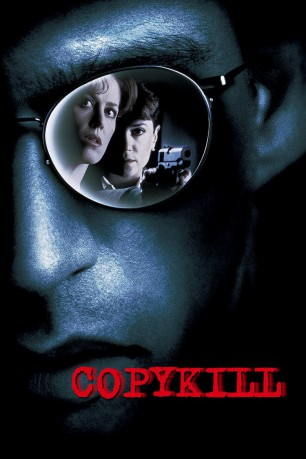

#4081 Copykill
Alternativ: Copycat
 
 IMDB-Wertung: 6.6 / 10
IMDB-Wertung: 6.6 / 10  Metascore: 0
Metascore: 0 
Ein Serienmörder hält Frisco in Atem. Das Besondere: Er kopiert die Methoden anderer Serientäter. Dahinter steht ein perfider Plan, den eine Kriminologin, die wegen eines Traumas ihre Wohnung nicht verlassen kann, und eine Polizistin gemeinsam entschlüsseln müssen.
Jahr: 1995
Dauer: 123 Minuten
FSK: 16
Land: USA Studio: Warner Bros.Tonspuren: DD5.1 - ,
Untertitel:
Auflösung: 1080p (1920x800) Größe: 9738 MB
Genre: Krimi, Drama, Mystery, Thriller
Regisseur: Jon Amiel
Drehbuch: Alex Buresch
Soundtrack:
Darsteller:
 Sigourney Weaver als Helen Hudson
Sigourney Weaver als Helen Hudson Holly Hunter als M.J. Monahan
Holly Hunter als M.J. Monahan Dermot Mulroney als Reuben Goetz
Dermot Mulroney als Reuben Goetz- William McNamara als Peter Foley
 Harry Connick Jr. als Daryll Lee Cullum
Harry Connick Jr. als Daryll Lee Cullum J.E. Freeman als Lt. Quinn
J.E. Freeman als Lt. Quinn Will Patton als Nicoletti
Will Patton als Nicoletti John Rothman als Andy
John Rothman als Andy- Shannon O'Hurley als Susan Schiffer
- Tahmus Rounds als Landis
 Richard Conti als Harvey
Richard Conti als Harvey- Bert Kinyon als Burt
- Rob Nilsson als SWAT Commander
- Rebecca Klingler als Peter's Wife
 Kelvin Han Yee als Chinese Detective
Kelvin Han Yee als Chinese Detective- Jeni Chua als Michelle
- Stuart W. Yee als Thug
- Eleva Singleton als Paramedic
- Brian Banowetz als Suspect , uncredited
- Jon Briddell als Burglar , uncredited
 Greg Bronson als Pedestrian , uncredited
Greg Bronson als Pedestrian , uncredited- Monique Carmona als Woman on Hill on computer , uncredited
 Frederick Keeve als Policeman , uncredited
Frederick Keeve als Policeman , uncredited Ron Roggé als Paramedic , uncredited
Ron Roggé als Paramedic , uncredited- Kevin Scanlon als Night Club Patron , uncredited
- Jeff Scott als Cop , uncredited
- Tracey Silver als Student , uncredited
- Joseph Quinn Simpkins als Reporter , uncredited
 Theodore Carl Soderberg als Police Officer , uncredited
Theodore Carl Soderberg als Police Officer , uncredited- Bob Greene als Pachulski
- Tony Haney als Kerby
- Danny Kovacs als Kostas
- Scott DeVenney als Cop #1
- David Michael Silverman als Mike
- Diane Amos als Gigi
- Nick Scoggin als Conrad
- Dennis Richmond als KXBU Anchorman
- Kenny Kwong als Chinese Kid
- Charles Branklyn als Doc
- Kelly DeMartino als Festival Girl
- Terry Brown als Cop #2
- Corie Henninger als Jogger
- Bill Bonham als Photographer
- Kathleen Stefano als Peter's Mother
- Chris Beale als Tech Guy #1
- Hansford Prince als Fred
- Don West als Attorney
- Jay Jacobus als Judge
- John Charles Morris als Young Peter
- Keith Phillips als Felix Mendoza
Datei: X:\1995\Copykill (1995, FSK16, 1920x800).mkv seit 19.07.2016
Festplatte: HD 1992-1995
 Es gibt insgesamt 85 Filme in der Gruppe '1995'
Es gibt insgesamt 85 Filme in der Gruppe '1995'